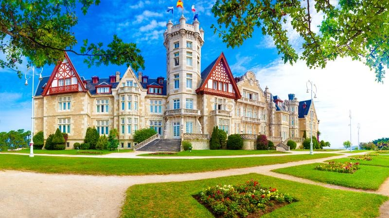
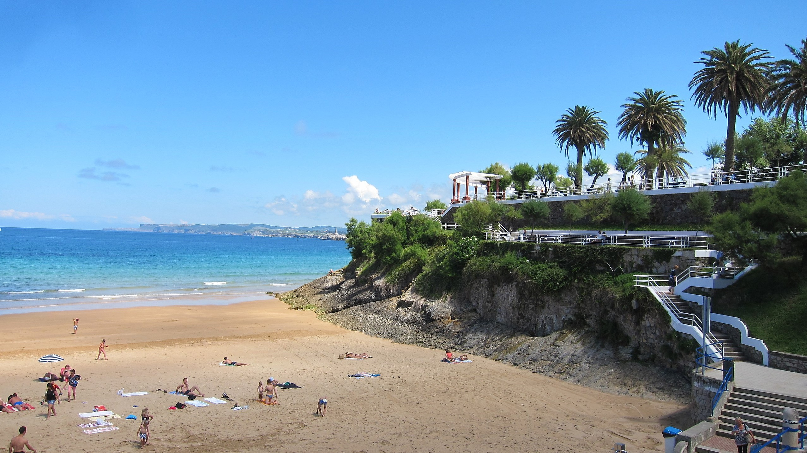
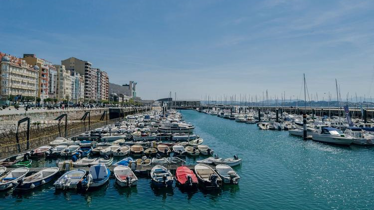

Que faire à Santander ?

Palais royal
Le Parque de la Magdalena, offre une vue sublime sur l’océan et la baie. Arboré de palmiers, pins et chênes verts, il reste vert en toute saison. On en prend plein les yeux! Sachez que la balade plaira aussi aux enfants : aire de jeux au bord de l’eau et enclos avec phoques et pingouins devraient les convaincre de marcher un peu!

El sardinero
Cette plage spacieuse est l'une des plus populaires de Cantabrie. Elle est facilement accessible y compris aux personnes à mobilité réduite

Le port de Santander
Pour faire connaissance avec Santander et sa baie, pas de plus belle entrée en matière que la promenade du front de mer, le Paseo de Pereda. Très populaire, on vient y promener son chien, boire un café, admirer la baie sur un banc, prendre le bateau…